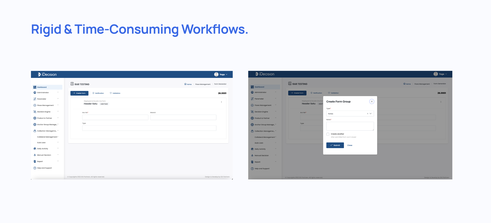
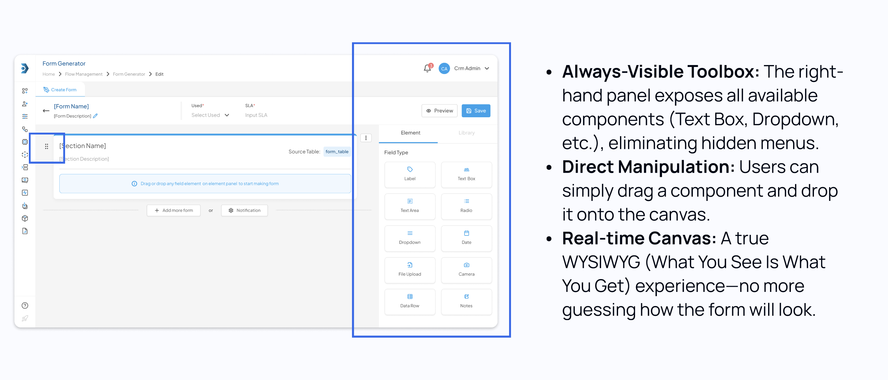
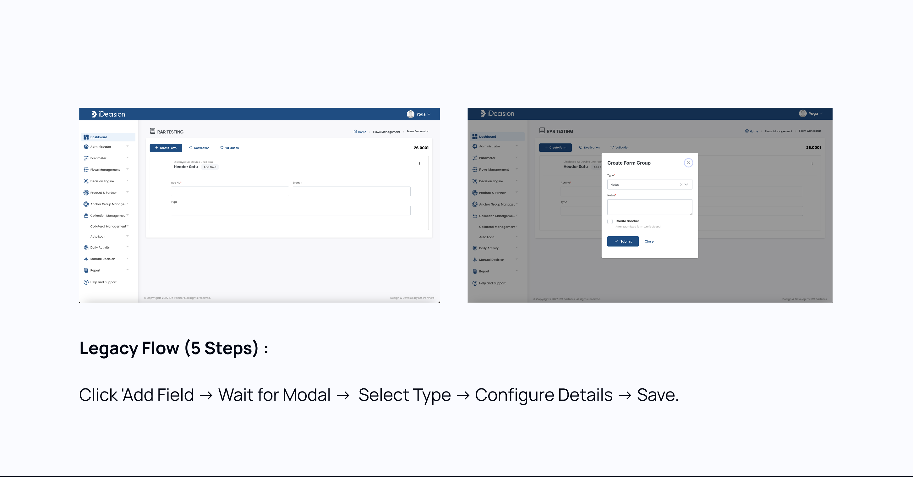
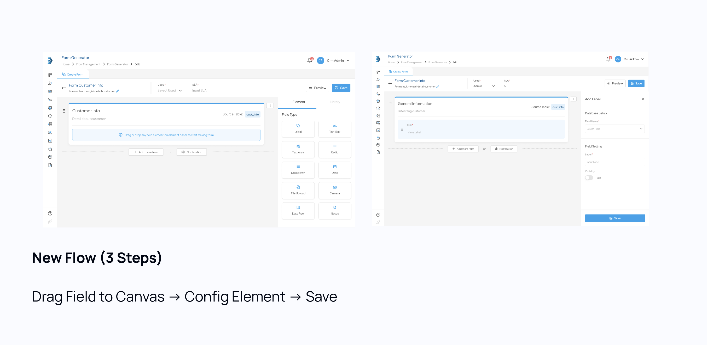

Context
In modern banking operations, agility is key. The Dynamic Form Generator is a centralized, low-code tool designed specifically for back-office personnel. It empowers operations teams to independently build, configure, and deploy complex application forms (such as loan originations, credit applications, and onboarding flows) without requiring engineering intervention.
The Challenge

Key Point
- Users had to navigate through multiple pop-ups and page transitions just to add a single field
- Reordering or restructuring the form was highly rigid and difficult to execute
- The dense visual layout increased the user's cognitive load.
User Research & Synthesis (Task & Insight)
Before came up with solution, I interviewed 3-5 System Analyst to know their thought about this feature
Here’s the insight:
- "Context Switching" Fatigue : Users expressed frustration constantly losing their place when switching between the main canvas and popup modals.
- Lack of Direct Control : Users struggled to reorder fields, often deleting and re-creating them because they couldn't simply "move" them.
- Hidden Affordances : Useful field types were underutilized because they were buried inside deep dropdown menus.
Conclusion
The core problem is Indirect Interaction. To fix this, users need to be able to physically see and grasp the tools, then place them exactly where they want without leaving the screen.*
The Solution

Measurable Impact
Legacy Flow

New Flow

Learning & Reflection
- Implementing a smooth drag-and-drop library required close collaboration with the Front-End engineering team to ensure performance wasn't compromised.
- Radical changes can confuse legacy users. I learned that introducing a brief "interactive tour" was necessary to help existing users adapt to the new workflow.